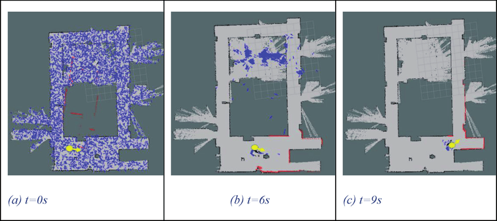

Unraveling the Magic of Particle Filters: From Blindfolded Games to Robot Pose Estimation

Have you ever found yourself in a dark room, blindfolded and spinning around, relying solely on your friends' shouts to avoid crashing into walls? It's an exhilarating game that pushes your senses to the limit. But did you know that this game holds the key to understanding the fascinating world of particle filters and their role in helping robots estimate their poses in complex environments? Let's dive into this captivating topic together!
Intuitive Understanding of the Particle Filter
Imagine being blindfolded and spun around like a top. It's disorienting, to say the least. In this situation, you can't rely on your vision. So, what can you rely on? Your friends, of course! As you stumble in the dark, your friends shout "DANGER! DANGER!" whenever you're close to a wall, providing you with crucial cues about your surroundings. However, in a room, there are four walls, so you don't know which one you're facing. But fear not, there's another sense you can use - your hearing. You listen carefully to the direction and distance of your friends' shouts or even their footsteps while running. With each event of "DANGER" and playful howling, your understanding of your position and orientation in the room improves. Your ultimate objective shifts from understanding your position to the exciting challenge of catching your friends. And as soon as you succeed, the blindfolded role switches to one of your friends.
Now, let's draw parallels to the world of robotics. Imagine a robot placed in an environment, armed with a map of its surroundings, just like you had the layout of your own room. However, this robot has no idea about its own pose or what it may be facing. To assist the robot, we equip it with a powerful LIDAR sensor, providing two senses to rely on: the point cloud data of obstacles and a motion model.
However, There's a question to ponder here How reliable was your distance perception or your friends' cues during the blindfolded game?
If you've followed our previous blog series on the Kalman Filter (highly recommended), you're aware that every sensor has noise, and leveraging multiple noisy observations leads to a better estimation.
In our scenario, both the LIDAR point clouds and the motion model introduce noise. Drawing on your familiarity with the Kalman Filter, you might think of using it to handle these noisy inputs and provide an estimated state. However, there's an essential requirement - the noise must follow a specific probability distribution known as Gaussian. If the noise doesn't fit this distribution, the Kalman Filter won't be effective. But where does this non-Gaussian probability distribution is encoutered for that let’s follow the robotics example with a few illustrations
1. Initialization
The first step in the Particle Filter algorithm is the initialization phase. The robot starts by scattering particles randomly throughout the space with random orientations. Each particle represents a probable pose of the robot. The number of particles used depends on the size and complexity of the explored space, but for simplicity, let's consider 100 poses initially.
The random scattering of particles provides an initial approximation of the robot's pose distribution in the environment. This distribution is called the "prior distribution" or the "prior belief."
2. Sensor Measurement
Once the particles are scattered, the journey begins with an initial sensor reading from the LIDAR, which provides information about the surroundings. For example, the robot may detect a flat wall straight ahead. This sensor measurement serves as a cue to refine the randomly scattered particles. It is not deterministic as many locations could give this reading even false positives from middle of room facing nothing.
Using the sensor measurement, the particles are weighted and then resampled, allocating more particles at positions and orientations where they are likely to encounter the observed feature (in this case, the straight wall). The resampling process aims to align the particles with the actual environment, increasing the likelihood of capturing the robot's true pose.
But what exactly is a MOTION MODEL? In simple terms, it captures the relationship between an object's current state (position and orientation) and its future state, considering factors like velocity, acceleration, and direction of movement. The motion model allows us to estimate or predict where the robot is likely to be in the future, given its current state and known control inputs.
3. Motion Model
As the robot moves, the particles move accordingly. The motion model comes into play to update the particle positions based on the known control inputs and the robot's current state. The motion model captures the relationship between the robot's current state (position and orientation) and its future state, considering factors like velocity, acceleration, and direction of movement.
By applying the motion model to each particle, the algorithm predicts where the particles are likely to be in the next time step. This prediction accounts for the robot's expected movement, improving the estimation of the robot's pose.
4. Monte Carlo Localization and Resampling
The Particle Filter algorithm performs the weight assignment step. Each particle is assigned a weight that reflects how well it aligns with the sensor measurements. The weight represents the likelihood of a particle being the true pose of the robot given the sensor data.
Particles that better match the sensor measurements receive higher weights, while particles that do not align well receive lower weights. This weight assignment is typically done by comparing the sensor measurement with the expected measurement at each particle's pose.
The purpose of the weight assignment is to emphasize particles that are more likely to represent the true pose of the robot. It allows the algorithm to focus on particles that have a higher chance of capturing the actual state, filtering out less probable particles.
After the weight assignment, the Particle Filter algorithm performs resampling to generate a new set of particles for the next iteration. The resampling step aims to maintain a representative set of particles that better represents the true pose distribution.
The resampling process is based on the assigned weights. Particles with higher weights have a higher probability of being selected for the next generation, while particles with lower weights have a lower chance of being chosen.
Resampling helps concentrate the particles around areas of high probability, ensuring that the algorithm focuses on regions where the robot is likely to be located. This adaptive resampling enables the algorithm to adapt to changes in the environment and converge to a more accurate estimate of the robot's pose.
5. Non-Gaussian Distribution
Something we had promised before to touch on, let’s bring back few of the old resampling illustrations. Can we call these distribution to be gaussian ? What is gaussian? Well this has been discussed in previous blogs,
In summary, Gaussian distributions are bell-shaped curves that represent symmetric data clustering around a mean, while non-Gaussian distributions encompass a broader range of shapes and patterns. Well using these illustrations it’s obvious all the resampling makes the distribution to be non-gaussian, and the process of monte-carlo localisation and resampling is the main unit block in particle filters.
6. Iteration
The Particle Filter algorithm continues to iterate through the steps of motion prediction, weight assignment, and resampling. With each iteration, the particle filter refines the estimate of the robot's pose.
The process doesn't end after a single iteration. Multiple iterations are performed to iteratively improve the estimation of the robot's pose. As the iterations progress, the particles become increasingly concentrated around the true pose, providing a clearer understanding of the robot's state.
The number of iterations required depends on the complexity of the environment, the quality of sensor measurements, and the desired level of accuracy. The algorithm continues until the estimated pose converges to a satisfactory level or until a specified stopping criterion is met.
Conclusion
In this blog, we explored the formal steps involved in the Particle Filter algorithm and gained a more detailed understanding of how it works. From the initialization and scattering of particles to the refinement through sensor measurements and motion models, each step contributes to improving the estimation of the robot's pose.
The process of weight assignment and resampling helps adaptively handle complex probability spaces, ensuring that the algorithm focuses on areas of high likelihood and filters out less probable particles.
Through iterations, the particle filter progressively refines its estimate, converging to a more accurate representation of the robot's pose. This powerful algorithm has revolutionized the field of robotics and enables robots to effectively navigate and interact with their environments.
So, the next time you encounter a robot estimating its pose in a complex environment, remember the magic of particle filters and how they rely on the interplay between sensor measurements, motion models, and resampling to unravel the robot's state.